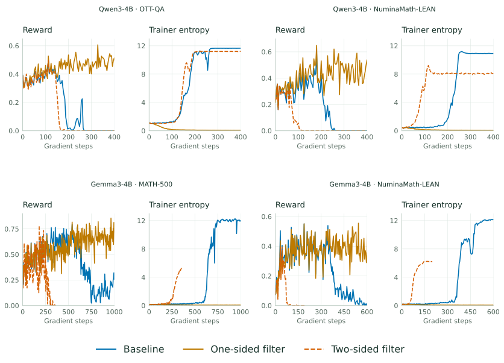
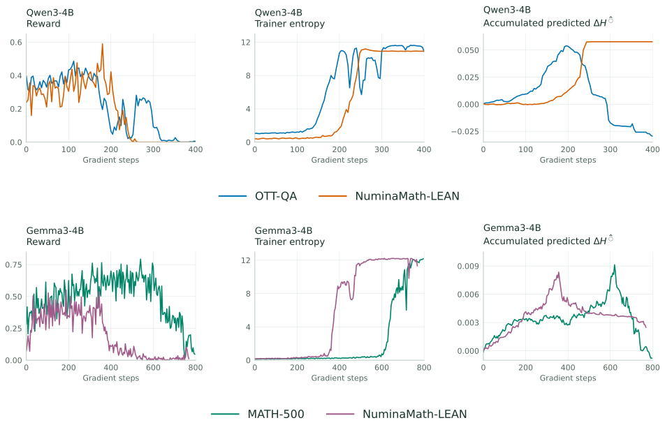
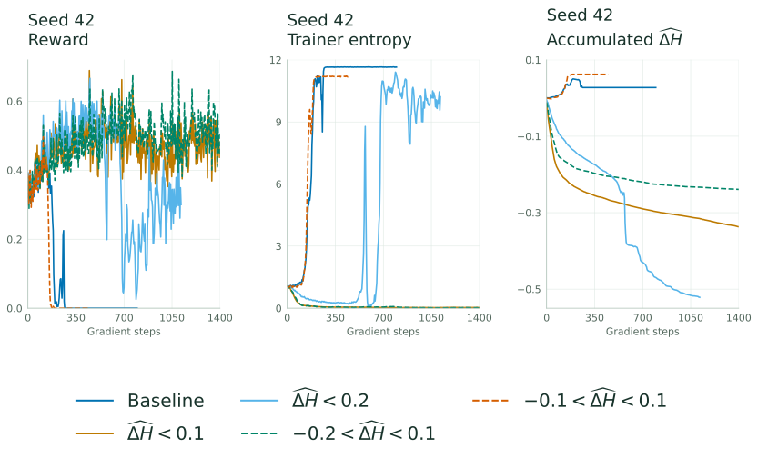
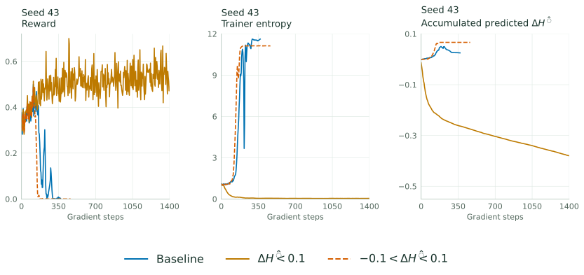
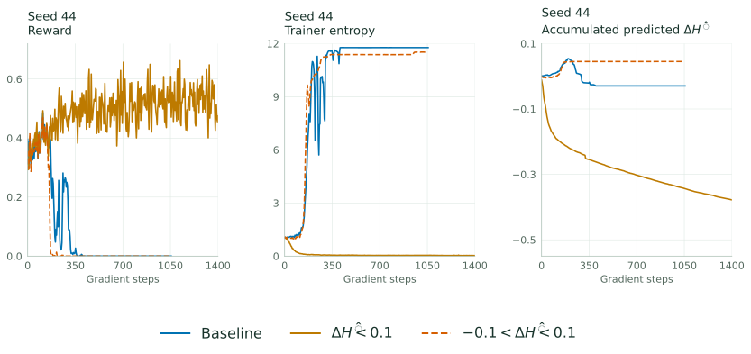
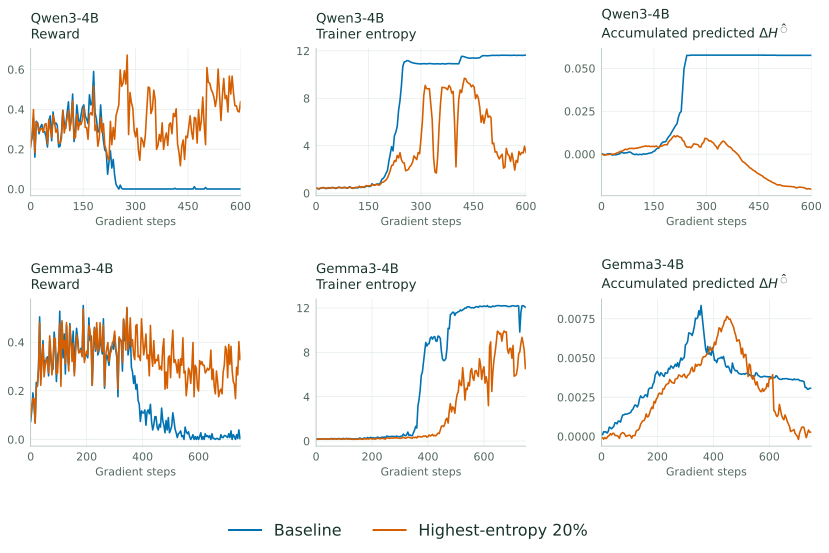
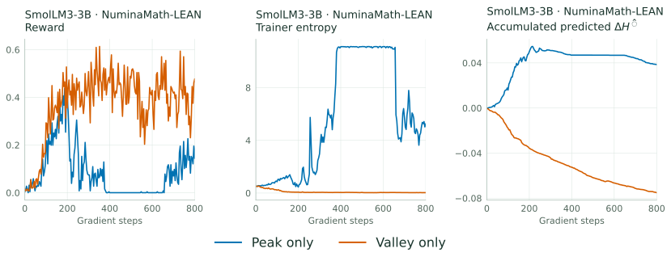

Overview
Reinforcement learning with verifiable rewards (RLVR) can improve a language model’s reasoning while remaining susceptible to training collapse. In the collapse-prone runs we study, reward falls as policy entropy rises sharply. A local, first-order approximation of entropy change follows the same qualitative trend before collapse. We use this signal to control the updates directly from the trainer side, without modeling the rollout policy.
Removing updates with large predicted entropy increases stabilizes all four settings over the plotted training horizon. Additionally removing entropy-decreasing updates has the opposite effect: entropy rises sooner and training collapses earlier.

CURRENT VIEWS ON INSTABILITY
Much of the work on RLVR instability starts from a mismatch between the expected reward under the current policy and the surrogate objective optimized using older rollouts. Reusing samples across gradient steps creates policy lag. Differences between training and inference engines introduce another mismatch. Importance-ratio corrections, clipping, gradient-alignment methods, and improved numerical consistency aim to control these effects. They improve stability in some settings, but do not consistently prevent collapse. Removing policy lag or enforcing closer training–inference agreement can also trade away efficiency, particularly when rollout generation and training could otherwise overlap.
A related approach constrains how far the policy moves from a reference, using KL regularization or a similar loss. The reference may be the initial model, a recent rollout policy, or a moving average. Appropriately configured KL regularization can consistently stabilize asynchronous RL. However, this comparison can add cost: a separate reference may require another forward pass, while full-distribution comparisons against the rollout policy require storing or recomputing vocabulary-level probabilities.
We extend the gradient perspective introduced in our recent work: how does an update change the local token distribution? Here, we estimate its effect on entropy using a closed-form, first-order expression computed from the trainer’s current distribution and the quantities already used in the policy-gradient loss. Computing the estimate requires no additional backpropagation, rollout-policy model, or saved rollout logits. It still uses the usual sampled-token importance ratio; the additional computation consists of reductions over the trainer distribution. We hope this work makes the gradient view a compelling perspective for stabilization in environments where staleness is unavoidable.
Entropy growth accompanies collapse.
For a next-token distribution p, entropy H(p) = −∑j pj log pj measures how concentrated the prediction is over the vocabulary. Higher entropy means that probability mass is less concentrated among likely next tokens.
We measure entropy under the current trainer policy, on contexts generated by the rollout policy, and average over sampled token positions. Across the four baseline runs below, a sharp increase accompanies reward collapse. These settings span multi-turn question answering and single-turn mathematics, two model families, and different clipping configurations.

First-order entropy change tracks training entropy.
Let ps be the trainer’s probability for the sampled token, A its advantage, and ρs its trainer-to-rollout importance ratio. For a token whose unclipped policy-gradient surrogate is active, a local logit step of size η gives the first-order entropy-change estimate:
The sign gives the predicted direction: positive contributions increase local entropy; negative contributions decrease it. The expression follows the local gradient analysis in WAPO and On the Entropy Dynamics in Reinforcement Fine-Tuning of Large Language Models. We average the estimate over tokens that contribute to the loss at each gradient step, then accumulate those averages over training.
Accumulated predicted entropy change follows the same trend as observed entropy prior to collapse, beginning to increase in the same region where trainer entropy begins to rise. Across the four settings, its Spearman correlations with measured entropy range from 0.756 to 0.951, and Pearson correlations range from 0.518 to 0.942 prior to collapse.
The equation is a local first-order estimate rather than the exact entropy change of the full network. Parameters are shared across tokens and contexts, so a minibatch update introduces cross-token interactions absent from the local logit-space calculation. The estimate also holds the sampled contexts fixed and does not account for how subsequent rollouts change the context distribution. Higher-order effects and optimizer dynamics such as momentum, adaptive preconditioning, and weight decay are omitted. We use the estimate as a tractable measure of the direction of entropy change. Despite these approximations, we observe that suppressing tokens with large positive predicted entropy change consistently improves stability in collapse-prone settings.
INTERVENE ON THE DIRECTION
We choose a collapse-prone DAPO configuration for each model–dataset pair and compare it with two token filters. All runs use four policy updates per rollout batch, so policy lag remains present. For filtering, we omit the learning-rate factor from ΔH and apply the thresholds to this unscaled quantity.
One-sided filter
Remove updates with ΔH > τ⁺.
Suppress large predicted entropy increases while retaining entropy-decreasing updates.
Two-sided filter
Retain only τ⁻ < ΔH < τ⁺.
Also suppress updates with large predicted entropy decreases.
The figure below shows a consistent directional effect. The one-sided filter controls entropy and remains stable over the plotted horizon in all four settings. The two-sided filter removes more updates, yet entropy rises and reward collapses earlier than in the baseline.
Gemma3-4B on MATH-500 makes the contrast particularly clear. The baseline begins to deteriorate around 500 gradient steps. Removing updates with ΔH > 0.2 preserves stability over the plotted horizon, while retaining only −0.1 < ΔH < 0.2 leads to collapse at approximately 250 steps. The improvement cannot be explained solely by reducing the overall optimization signal: removing additional entropy-decreasing contributions reverses it.
Qwen3-4B / OTT-QA: multi-seed experiments



REVISIT EXISTING METHODS
Different masks, a common entropy signal
The same estimate helps interpret interventions that were designed around other token properties. The 80/20 entropy rule trains only on the highest-entropy 20% of tokens. On NuminaMath-LEAN with Qwen3-4B, it substantially reduces accumulated predicted entropy change, keeps entropy lower, and avoids the baseline’s complete reward collapse. With Gemma3-4B, the stabilizing effect is weaker: entropy growth is delayed, but reward still degrades later.

Our earlier peak/valley experiments give another example. A sampled token is a peak when ps > ∑j pj², and a valley otherwise. On SmolLM3-3B / NuminaMath-LEAN, peak-only training accumulates positive predicted entropy change, followed by rising entropy and reward collapse. Valley-only training accumulates negative predicted entropy change and remains stable over the same horizon.

Peak/valley membership alone does not fix the entropy direction; the advantage also matters. Likewise, high context entropy and positive predicted entropy change describe different properties. Across these comparisons, the accumulated estimate captures the net effect of the updates each method retains. The degree of stabilization tracks how strongly that selection controls entropy growth.
WHAT THIS VIEW GIVES US
A practical signal on the trainer side.
In the entropy-growth failures studied here, a local first-order signal tracks the observed dynamics, and directly filtering its positive tail improves stability. The gradient view gives a complementary way to act on what the resulting updates do to the trainer’s distribution.
The evidence covers selected collapse-prone configurations, two model families in the main filtering experiments, and finite training horizons. The method introduces thresholds, and suppressing entropy growth too aggressively may affect exploration. Decreasing entropy can also lead to collapse, as shown by the negative-valley-only experiments in WAPO. Addressing this low-entropy failure mode and developing methods that regulate both stability and exploration without additional selection hyperparameters remain open directions.